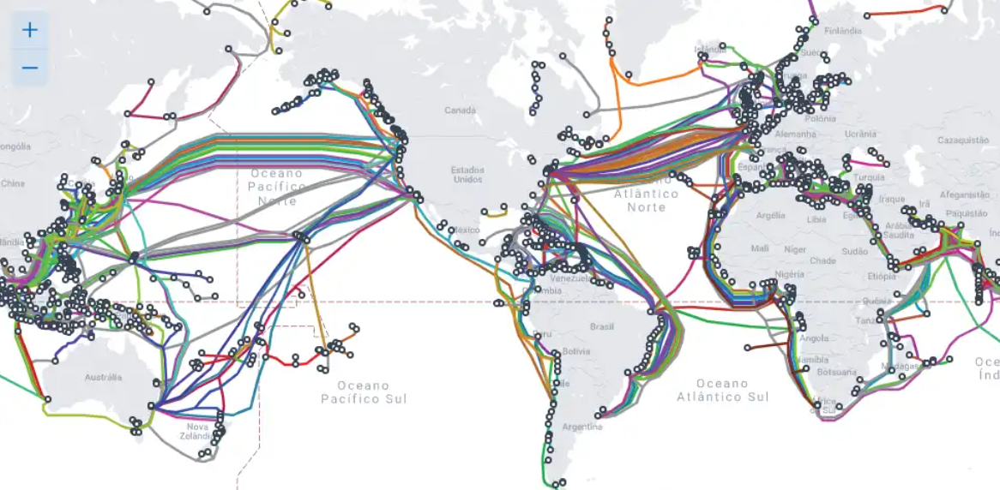
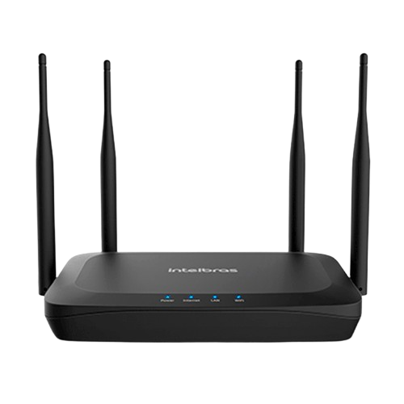
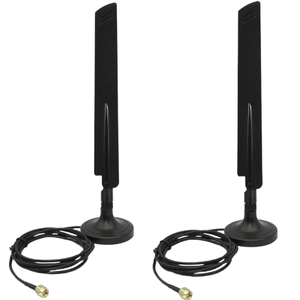
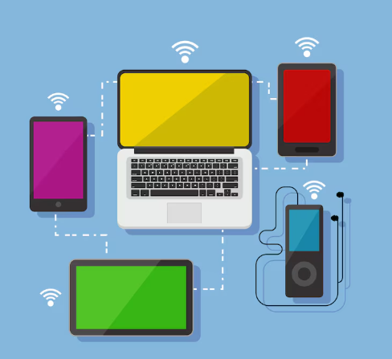
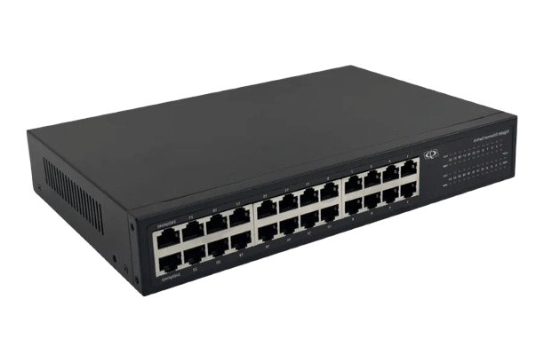
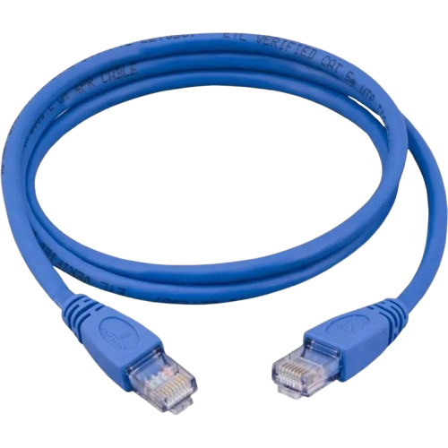

Fundamentos de Redes
Aprenda os conceitos essenciais sobre redes de computadores, comunicação, internet e protocolos.
1. O que são Redes de Computadores?
Redes de computadores são sistemas que conectam dispositivos (computadores, celulares, servidores, etc.) para compartilhar dados, recursos e comunicação.
2. O que é uma Rede Mínima?
Uma rede mínima é composta por dois dispositivos interligados que conseguem trocar informações entre si.
3. O que é a Internet? O que a compõe?
A Internet é uma grande rede mundial que interliga milhões de dispositivos. Ela é composta por servidores, cabos de fibra óptica, redes móveis, satélites, roteadores e protocolos de comunicação.
4. O que é Web?
Web é um conjunto de páginas, aplicações e conteúdos acessados pela Internet através de navegadores utilizando o protocolo HTTP ou HTTPS.
5. O que é o mapa de fibra óptica? Mostre o mapa global.
O mapa de fibra óptica mostra os cabos submarinos responsáveis por conectar continentes e países, garantindo a comunicação global.
6. Componentes de uma Rede Wi-Fi
📡 Roteador
📶 Antenas
📲 Dispositivos conectados
7. Componentes de uma Rede Local com Cabo (Ethernet)
🔌 Switch
🧵 Cabos RJ45
💻 Dispositivos conectados
8. O que é um Protocolo de Comunicação?
Protocolos são regras que definem como dois dispositivos trocam dados. Ex.: HTTP, TCP, IP, DNS.
9. O que é o Modelo OSI?
O Modelo OSI é um padrão com 7 camadas que define como os dados trafegam em uma rede, da aplicação até o meio físico.
10. O que é o Modelo TCP/IP?
O Modelo TCP/IP resume o processo de comunicação em 4 camadas: Aplicação, Transporte, Internet e Rede.
11. O que são IPv4 e IPv6?
IPv4: usa endereços de 32 bits (ex.: 192.168.0.1).
IPv6: usa endereços de 128 bits, criado para suprir a falta de endereços IPv4.
12. Como IP e TCP são configurados no Node.js?
O programador define porta e endereço IP no servidor backend.
13. O que é HTTP e HTTPS?
HTTP: protocolo de transferência de hipertexto, sem criptografia.
HTTPS: versão segura, com criptografia SSL/TLS.